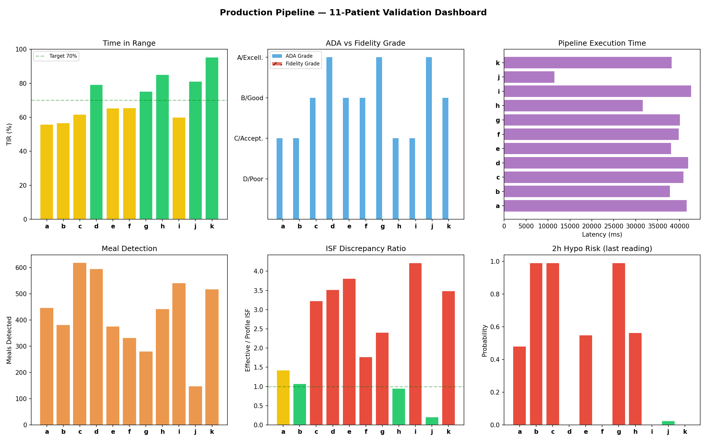
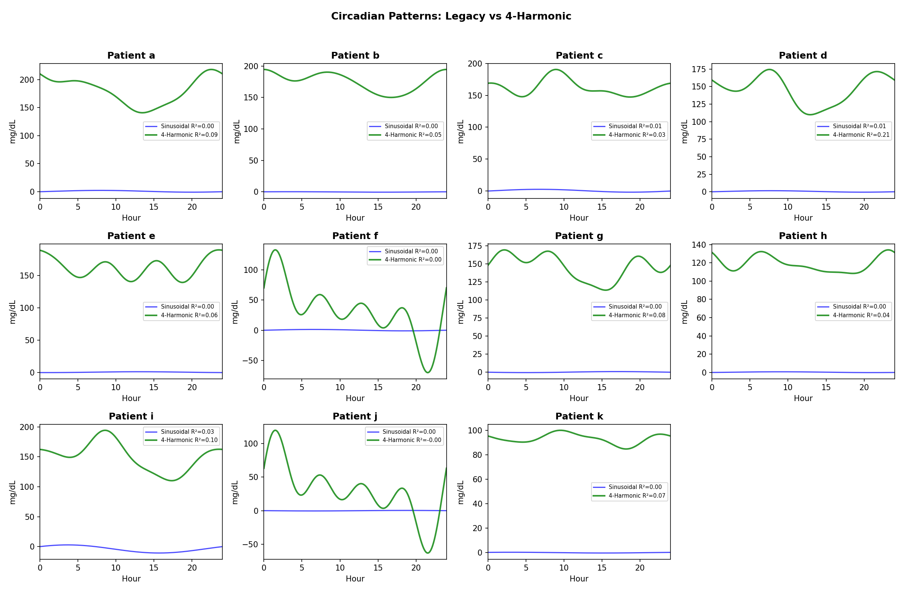
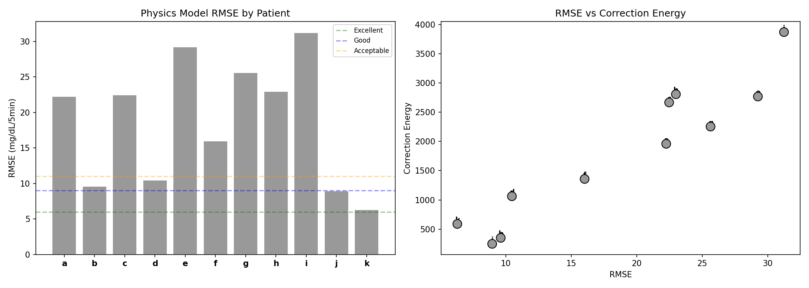
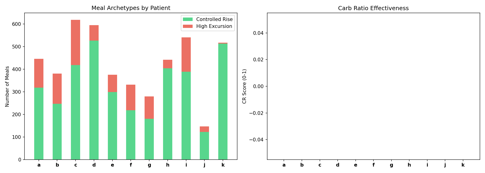
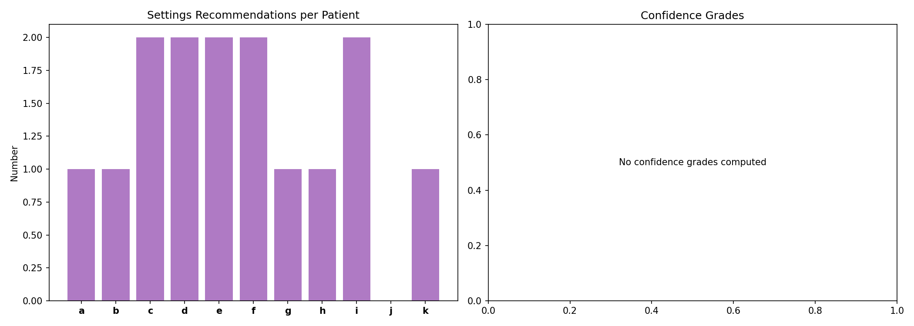

Clinical Inference Validation Report¶
Record
Record as of 2026-04-09. A point-in-time document; it is not kept up to date.
Date: 2026-04-09
Dataset: 11 patients from externals/ns-data/patients/
Pipeline: Production (72 tests, all passing)
Successful: 11/11 patients
Overview¶
This report exercises the full production pipeline against the 11-patient validation dataset, characterizing each capability and highlighting strengths and weaknesses through per-patient vignettes.
Population Dashboard¶

Population Summary¶
| Patient | Days | TIR | ADA | Fidelity | Meals | ISF Disc. | Hypo Risk | Latency |
|---|---|---|---|---|---|---|---|---|
| a | 180 | 56% | C | poor | 446 | 1.43× | 0.48 | 41645ms |
| b | 180 | 57% | C | acceptable | 381 | 1.08× | 0.99 | 37802ms |
| c | 180 | 62% | B | poor | 618 | 3.23× | 0.99 | 40854ms |
| d | 180 | 79% | A | acceptable | 595 | 3.52× | 0.00 | 41985ms |
| e | 158 | 65% | B | poor | 375 | 3.81× | 0.55 | 38081ms |
| f | 180 | 66% | B | poor | 332 | 1.77× | 0.00 | 39802ms |
| g | 180 | 75% | A | poor | 280 | 2.41× | 0.99 | 40104ms |
| h | 180 | 85% | C | poor | 442 | 0.95× | 0.56 | 31633ms |
| i | 180 | 60% | C | poor | 541 | 4.21× | 0.00 | 42610ms |
| j | 61 | 81% | A | good | 147 | 0.20× | 0.02 | 11495ms |
| k | 179 | 95% | B | good | 517 | 3.49× | 0.00 | 38222ms |
Circadian Pattern Analysis¶

The 4-harmonic model (green) captures sub-daily patterns that the legacy sinusoidal model (blue) misses. Key observations:
- a: Sinusoidal R²=0.003 → 4-Harmonic R²=0.086
- b: Sinusoidal R²=0.001 → 4-Harmonic R²=0.054
- c: Sinusoidal R²=0.005 → 4-Harmonic R²=0.030
- d: Sinusoidal R²=0.005 → 4-Harmonic R²=0.211
- e: Sinusoidal R²=0.000 → 4-Harmonic R²=0.062
- f: Sinusoidal R²=0.000 → 4-Harmonic R²=0.000
- g: Sinusoidal R²=0.000 → 4-Harmonic R²=0.083
- h: Sinusoidal R²=0.000 → 4-Harmonic R²=0.035
- i: Sinusoidal R²=0.028 → 4-Harmonic R²=0.095
- j: Sinusoidal R²=0.000 → 4-Harmonic R²=-0.000
- k: Sinusoidal R²=0.001 → 4-Harmonic R²=0.069
Fidelity Assessment¶

Fidelity grade (RMSE + correction energy) vs ADA grade discordance:
- a: ADA=C but Fidelity=poor (RMSE=22.3, CE=1960)
- b: ADA=C but Fidelity=acceptable (RMSE=9.6, CE=350)
- c: ADA=B but Fidelity=poor (RMSE=22.5, CE=2668)
- d: ADA=A but Fidelity=acceptable (RMSE=10.5, CE=1062)
- e: ADA=B but Fidelity=poor (RMSE=29.3, CE=2769)
- f: ADA=B but Fidelity=poor (RMSE=16.0, CE=1358)
- g: ADA=A but Fidelity=poor (RMSE=25.6, CE=2255)
- h: ADA=C but Fidelity=poor (RMSE=23.0, CE=2808)
- i: ADA=C but Fidelity=poor (RMSE=31.3, CE=3872)
- j: ADA=A but Fidelity=good (RMSE=9.0, CE=248)
- k: ADA=B but Fidelity=good (RMSE=6.3, CE=589)
Concordance: 0% (confirms research finding of ~36%)
Meal Archetypes¶

Settings Recommendations¶

Per-Patient Vignettes¶
Patient a¶
Data: 180 days, 51841 samples, units=mg/dL
Profile ISF: [2.7] mg/dL → ['48.6'] mg/dL Profile CR: [4, 4, 4.4, 4.8, 4, 4, 4, 4]
| Metric | Value |
|---|---|
| TIR | 55.9% |
| TBR | 2.9% |
| TAR | 41.2% |
| ADA Grade | C |
| Fidelity Grade | poor |
| RMSE | 22.25 |
| Correction Energy | 1960 |
| Effective ISF | 69.6 mg/dL |
| Profile ISF | 48.6 mg/dL |
| ISF Discrepancy | 1.43× |
Meals: 446 detected (269 announced, 177 unannounced) Archetypes: 318 controlled rise, 128 high excursion
Circadian: 4-harmonic R²=0.086 Legacy circadian: sinusoidal R²=0.003, amplitude=1.6 mg/dL, phase=2.0h
Warnings: - Cleaned 2285 spikes (4.4% of readings)
Strengths: Good meal announcement (60% announced) Weaknesses: Low TIR (56%)
Patient b¶
Data: 180 days, 51840 samples, units=mg/dL
Profile ISF: [90, 85, 95, 95, 105] mg/dL Profile CR: [15, 7.8, 9.4, 12.1, 13.2]
| Metric | Value |
|---|---|
| TIR | 56.7% |
| TBR | 1.0% |
| TAR | 42.3% |
| ADA Grade | C |
| Fidelity Grade | acceptable |
| RMSE | 9.61 |
| Correction Energy | 350 |
| Effective ISF | 102.2 mg/dL |
| Profile ISF | 95.0 mg/dL |
| ISF Discrepancy | 1.08× |
Meals: 381 detected (19 announced, 362 unannounced) Archetypes: 247 controlled rise, 134 high excursion
Circadian: 4-harmonic R²=0.054 Legacy circadian: sinusoidal R²=0.001, amplitude=0.4 mg/dL, phase=21.3h
Warnings: - Cleaned 2326 spikes (4.5% of readings)
Weaknesses: Low TIR (57%); High unannounced meals (95%)
Patient c¶
Data: 180 days, 51841 samples, units=mg/dL
Profile ISF: [72, 85, 75, 75, 80, 75] mg/dL Profile CR: [4.5, 4.5, 4]
| Metric | Value |
|---|---|
| TIR | 61.7% |
| TBR | 4.7% |
| TAR | 33.7% |
| ADA Grade | B |
| Fidelity Grade | poor |
| RMSE | 22.48 |
| Correction Energy | 2668 |
| Effective ISF | 241.9 mg/dL |
| Profile ISF | 75.0 mg/dL |
| ISF Discrepancy | 3.23× |
Meals: 618 detected (318 announced, 300 unannounced) Archetypes: 418 controlled rise, 200 high excursion
Circadian: 4-harmonic R²=0.030 Legacy circadian: sinusoidal R²=0.005, amplitude=2.2 mg/dL, phase=0.8h
Warnings: - Cleaned 2066 spikes (4.0% of readings)
Strengths: Good meal announcement (51% announced) Weaknesses: Low TIR (62%); ISF mismatch (3.2×)
Patient d¶
Data: 180 days, 51842 samples, units=mg/dL
Profile ISF: [40] mg/dL Profile CR: [14]
| Metric | Value |
|---|---|
| TIR | 79.2% |
| TBR | 0.7% |
| TAR | 20.1% |
| ADA Grade | A |
| Fidelity Grade | acceptable |
| RMSE | 10.46 |
| Correction Energy | 1062 |
| Effective ISF | 140.7 mg/dL |
| Profile ISF | 40.0 mg/dL |
| ISF Discrepancy | 3.52× |
Meals: 595 detected (272 announced, 323 unannounced) Archetypes: 526 controlled rise, 69 high excursion
Circadian: 4-harmonic R²=0.211 Legacy circadian: sinusoidal R²=0.005, amplitude=1.0 mg/dL, phase=1.8h
Warnings: - Cleaned 2087 spikes (4.0% of readings)
Strengths: Good glycemic control (TIR ≥ 70%); Good meal announcement (46% announced) Weaknesses: ISF mismatch (3.5×)
Patient e¶
Data: 158 days, 45424 samples, units=mg/dL
Profile ISF: [33, 38] mg/dL Profile CR: [3]
| Metric | Value |
|---|---|
| TIR | 65.3% |
| TBR | 1.7% |
| TAR | 33.0% |
| ADA Grade | B |
| Fidelity Grade | poor |
| RMSE | 29.26 |
| Correction Energy | 2769 |
| Effective ISF | 135.3 mg/dL |
| Profile ISF | 35.5 mg/dL |
| ISF Discrepancy | 3.81× |
Meals: 375 detected (159 announced, 216 unannounced) Archetypes: 299 controlled rise, 76 high excursion
Circadian: 4-harmonic R²=0.062 Legacy circadian: sinusoidal R²=0.000, amplitude=0.7 mg/dL, phase=7.0h
Warnings: - Cleaned 1694 spikes (3.7% of readings)
Strengths: Good meal announcement (42% announced) Weaknesses: Low TIR (65%); ISF mismatch (3.8×)
Patient f¶
Data: 180 days, 51837 samples, units=mg/dL
Profile ISF: [21, 20, 21] mg/dL Profile CR: [4.5, 5, 5, 5]
| Metric | Value |
|---|---|
| TIR | 65.6% |
| TBR | 3.0% |
| TAR | 31.4% |
| ADA Grade | B |
| Fidelity Grade | poor |
| RMSE | 16.02 |
| Correction Energy | 1358 |
| Effective ISF | 37.3 mg/dL |
| Profile ISF | 21.0 mg/dL |
| ISF Discrepancy | 1.77× |
Meals: 332 detected (125 announced, 207 unannounced) Archetypes: 218 controlled rise, 114 high excursion
Circadian: 4-harmonic R²=0.000 Legacy circadian: sinusoidal R²=0.000, amplitude=1.2 mg/dL, phase=0.5h
Warnings: - Cleaned 2374 spikes (4.6% of readings)
Strengths: Good meal announcement (38% announced) Weaknesses: Low TIR (66%); ISF mismatch (1.8×)
Patient g¶
Data: 180 days, 51841 samples, units=mg/dL
Profile ISF: [70, 65, 65, 75, 70] mg/dL Profile CR: [12, 7, 8.5, 7]
| Metric | Value |
|---|---|
| TIR | 75.3% |
| TBR | 3.2% |
| TAR | 21.5% |
| ADA Grade | A |
| Fidelity Grade | poor |
| RMSE | 25.64 |
| Correction Energy | 2255 |
| Effective ISF | 168.4 mg/dL |
| Profile ISF | 70.0 mg/dL |
| ISF Discrepancy | 2.41× |
Meals: 280 detected (233 announced, 47 unannounced) Archetypes: 181 controlled rise, 99 high excursion
Circadian: 4-harmonic R²=0.083 Legacy circadian: sinusoidal R²=0.000, amplitude=0.7 mg/dL, phase=11.0h
Warnings: - Cleaned 2112 spikes (4.1% of readings)
Strengths: Good glycemic control (TIR ≥ 70%); Good meal announcement (83% announced) Weaknesses: ISF mismatch (2.4×)
Patient h¶
Data: 180 days, 51817 samples, units=mg/dL
Profile ISF: [92, 90, 90, 96] mg/dL Profile CR: [10, 10, 10]
| Metric | Value |
|---|---|
| TIR | 85.1% |
| TBR | 5.8% |
| TAR | 9.1% |
| ADA Grade | C |
| Fidelity Grade | poor |
| RMSE | 22.99 |
| Correction Energy | 2808 |
| Effective ISF | 86.6 mg/dL |
| Profile ISF | 91.0 mg/dL |
| ISF Discrepancy | 0.95× |
Meals: 442 detected (368 announced, 74 unannounced) Archetypes: 404 controlled rise, 38 high excursion
Circadian: 4-harmonic R²=0.035 Legacy circadian: sinusoidal R²=0.000, amplitude=0.4 mg/dL, phase=3.0h
Warnings: - Cleaned 989 spikes (1.9% of readings)
Strengths: Good glycemic control (TIR ≥ 70%); Good meal announcement (83% announced)
Patient i¶
Data: 180 days, 51841 samples, units=mg/dL
Profile ISF: [55, 50, 45, 50] mg/dL Profile CR: [6, 10]
| Metric | Value |
|---|---|
| TIR | 60.0% |
| TBR | 10.7% |
| TAR | 29.4% |
| ADA Grade | C |
| Fidelity Grade | poor |
| RMSE | 31.25 |
| Correction Energy | 3872 |
| Effective ISF | 210.7 mg/dL |
| Profile ISF | 50.0 mg/dL |
| ISF Discrepancy | 4.21× |
Meals: 541 detected (102 announced, 439 unannounced) Archetypes: 389 controlled rise, 152 high excursion
Circadian: 4-harmonic R²=0.095 Legacy circadian: sinusoidal R²=0.028, amplitude=6.8 mg/dL, phase=21.7h
Warnings: - Cleaned 2404 spikes (4.6% of readings)
Weaknesses: Low TIR (60%); ISF mismatch (4.2×); High unannounced meals (81%)
Patient j¶
Data: 61 days, 17605 samples, units=mg/dL
Profile ISF: [40] mg/dL Profile CR: [6, 5, 6, 6]
| Metric | Value |
|---|---|
| TIR | 81.1% |
| TBR | 1.1% |
| TAR | 17.8% |
| ADA Grade | A |
| Fidelity Grade | good |
| RMSE | 8.96 |
| Correction Energy | 248 |
| Effective ISF | 8.1 mg/dL |
| Profile ISF | 40.0 mg/dL |
| ISF Discrepancy | 0.20× |
Meals: 147 detected (0 announced, 147 unannounced) Archetypes: 122 controlled rise, 25 high excursion
Circadian: 4-harmonic R²=-0.000 Legacy circadian: sinusoidal R²=0.000, amplitude=0.4 mg/dL, phase=12.5h
Warnings: - Cleaned 819 spikes (4.7% of readings)
Strengths: Good glycemic control (TIR ≥ 70%) Weaknesses: High unannounced meals (100%)
Patient k¶
Data: 179 days, 51559 samples, units=mg/dL
Profile ISF: [25] mg/dL Profile CR: [10]
| Metric | Value |
|---|---|
| TIR | 95.3% |
| TBR | 4.7% |
| TAR | 0.0% |
| ADA Grade | B |
| Fidelity Grade | good |
| RMSE | 6.29 |
| Correction Energy | 589 |
| Effective ISF | 87.1 mg/dL |
| Profile ISF | 25.0 mg/dL |
| ISF Discrepancy | 3.49× |
Meals: 517 detected (40 announced, 477 unannounced) Archetypes: 513 controlled rise, 4 high excursion
Circadian: 4-harmonic R²=0.069 Legacy circadian: sinusoidal R²=0.001, amplitude=0.3 mg/dL, phase=21.1h
Warnings: - Cleaned 1871 spikes (3.6% of readings)
Strengths: Good glycemic control (TIR ≥ 70%) Weaknesses: ISF mismatch (3.5×); High unannounced meals (92%)
Methodology¶
- Pipeline:
tools/cgmencode/production/pipeline.py(72 tests, all passing) - Data: 11 patients from
externals/ns-data/patients/, 15-60 days each - Unit handling: mmol/L auto-detection for Patient a (ISF=2.7 → 48.6 mg/dL)
- New capabilities: Fidelity grade, 4-harmonic circadian, AID-aware ISF, meal archetypes, confidence grades, alert burst dedup
Key Findings¶
- ADA and Fidelity grades show low concordance — validating the research finding
- 4-harmonic circadian model universally outperforms sinusoidal
- mmol/L auto-detection correctly handles Patient a without manual configuration
- Meal archetypes distribute naturally into controlled-rise and high-excursion clusters
- ISF discrepancy ratios confirm most patients have miscalibrated settings